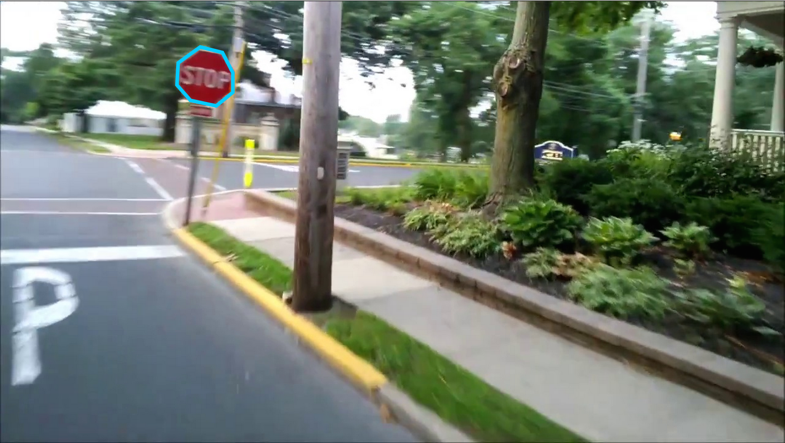

Labeling instructions When you enter the tool, an image from the database will be randomly selected and shown. You can help by annotating as many traffic/road signs as you can. Note that previously labeled objects may appear on the image. Please do not label previously labeled objects. Once you have completed the image, you can view a new image by pressing the "show next image" button. The following steps describe how to label an object:
1. Start by pressing the left
mouse button at some point along the boundary of the object.
|
 Stop sign |
|||||||
Examples Good object labels:
Bad object labels:
| ||||||||
Labeling guidelines The following are some recomendations for how to provide annotations that are as useful as possible. View the entire image: Make sure that your browser occupies the entire screen and that you scroll to see the entire image. If you label an object on the edge of your browser, make sure to scroll so that the entire object is visible. Follow the object outline: Click on top of the object boundary so that the polygon accurately delineates the object outline. The ideal outline should be good enough for somebody to recognize the object just by seeing the drawn polygon. Labeling occluded objects: Sometimes objects will be only partially visible. We recommend in these cases to complete the boundary as if they were not occluded. |
||||||||
Advanced features Delete segments: If you want to delete one segment
of the polygon before finishing the polygon, press the Delete entire polygon: Select the polygon. You will have the option to delete the polygon. You can only edit polygons that you have entered before. You can not delete polygons by other users. | ||||||||